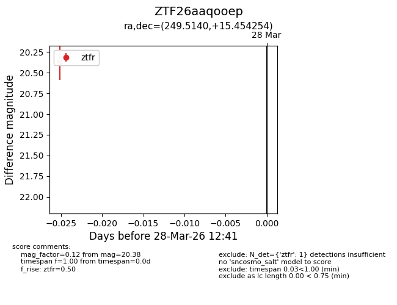
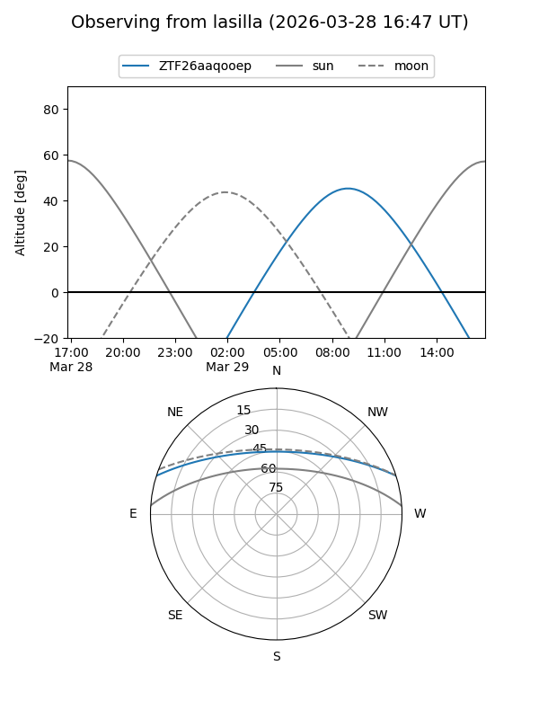
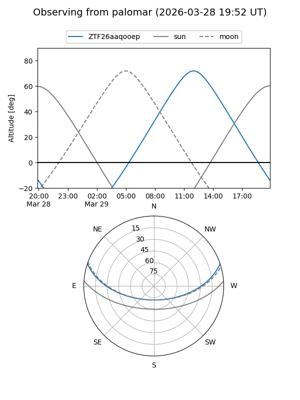

ZTF26aaqooep
Target ZTF26aaqooep at 2026-03-28 12:46
Aliases and brokers:
FINK: link
Lasair: link
ALeRCE: link
alt names
ZTF26aaqooep (ztf,fink_ztf)
Coordinates:
equatorial (ra, dec) = 249.5140,+15.45425
equatorial (HMS+DMS) = 16:38:03.36,+15:27:15.31
galactic (l, b) = (32.6166,+36.37243)
Flags:
Photometry:
last ztfr=20.38
1 ztfr detections
Lightcurve

Visibility


Additional plots